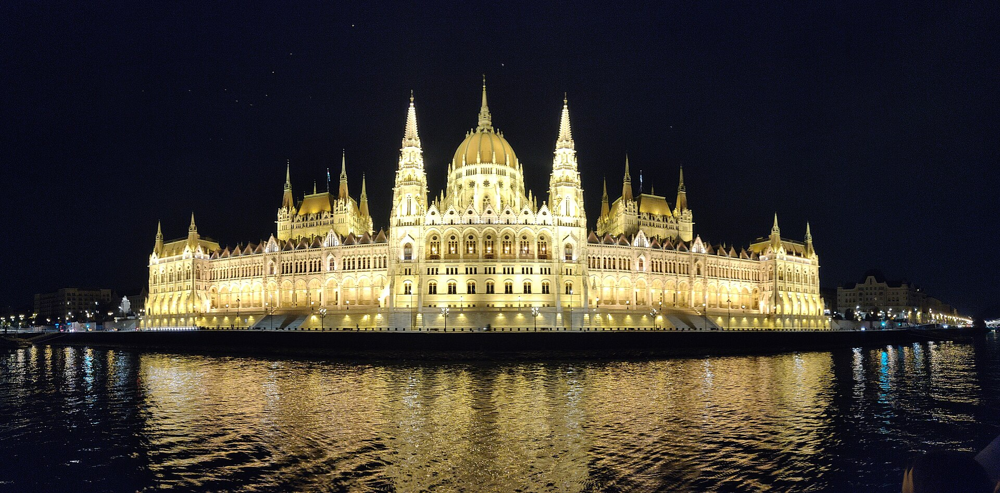
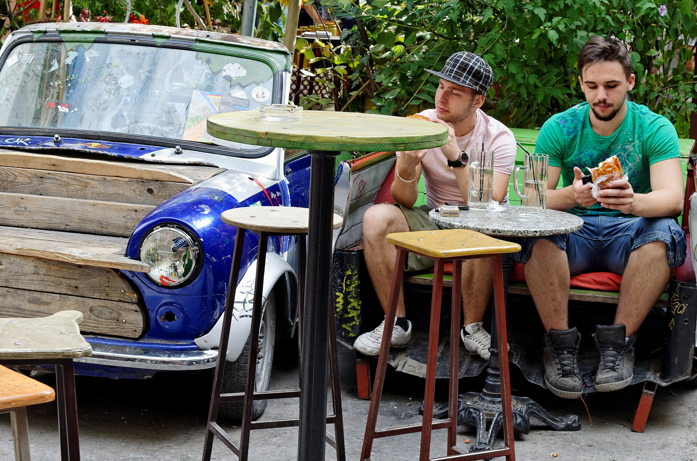

בודפשט, בירת הונגריה, נוצרה ב-1873 מאיחוד של בודה, אובודה ופשט, משני צדי הדנובה. בצד של בודה יש גבעות, ארמון ורחובות עתיקים, ובצד של פשט שדרות רחבות, הפרלמנט, בתי קפה והרובע היהודי התוסס. גדות הדנובה ורובע הטירה רשומים כאתר מורשת עולמית של אונסק"ו. זו עיר נוחה לסוף שבוע ארוך: היא קומפקטית, יפה מאוד בלילה ומלאה מרחצאות תרמיים.
9 האטרקציות המובילות

1. בניין הפרלמנט
סמל העיר: בניין ענק בסגנון ניאו-גותי על גדת הדנובה, שנבנה בין 1885 ל-1904 והוא הבניין הגדול בהונגריה. בסיור המודרך בפנים רואים את הכתר הקדוש של הונגריה.

2. ארמון בודה ורובע הטירה
מתחם הארמון המלכותי על גבעת הטירה, כחלק מאתר מורשת עולמית של אונסק"ו. בתוכו נמצאת הגלריה הלאומית ההונגרית, והתצפית על הדנובה ועל פשט מרהיבה.

3. מצודת הדייגים
טרסות תצפית בסגנון ניאו-רומנסקי עם שבעה צריחים, שנבנו בסוף המאה ה-19 ליד כנסיית מתיאש. אחד מנקודות התצפית המצולמות ביותר בעיר.

4. מרחצאות סצ'ני
אחד ממתחמי המרחצאות הרפואיים הגדולים באירופה, בפארק העיר (Városliget), עם מי מעיינות חמים. הבריכות החיצוניות פתוחות גם בחורף, ורואים את האדים עולים מהמים.

5. גשר השלשלאות
הגשר הקבוע הראשון שחיבר בין בודה לפשט, ונפתח ב-1849. בלילה, כשהוא מואר, הוא אחד המראות היפים בעיר.

6. שייט ערב על הדנובה
גדות הדנובה בבודפשט הן חלק מאתר מורשת עולמית של אונסק"ו. שייט ערב עובר מול הפרלמנט, הארמון והגשרים המוארים.

7. השוק הגדול (Nagy Vásárcsarnok)
השוק המקורה הגדול והעתיק בעיר, שנפתח ב-1897, בקצה רחוב ואצי. בקומה התחתונה דוכני פפריקה, נקניקים ומאפים, ובקומה העליונה מזכרות ואוכל מוכן.

8. ברים בחורבות (Ruin Bars)
ברובע היהודי (רובע 7) פועלים ברים בבניינים ישנים ומוזנחים, מעוצבים בריהוט ממוחזר. הראשון והמפורסם שבהם הוא סימפלה קרט (Szimpla Kert), שנפתח ב-2002.

9. בית הכנסת ברחוב דוהאני
בית הכנסת הגדול באירופה, בסגנון מורי, בלב הרובע היהודי. במתחם יש גם את המוזיאון היהודי ואנדרטת "עץ החיים" לזכר קורבנות השואה.
איפה לאכול
רק Carmel ו-Hanna כשרות. שאר המקומות אינם כשרים.
Carmel
כשר גלאטמסעדה בשרית כשרה למהדרין ברחוב קזינצי 31 שברובע היהודי. מטבח הונגרי-יהודי וישראלי: גולאש, מרק כופתאות מצה וצ'ולנט. ארוחות שבת בהזמנה מראש.
Hanna
כשר גלאטמסעדה כשרה למהדרין בחצר בית הכנסת האורתודוקסי ברחוב קזינצי 29, שנוסדה ב-1920. מטבח הונגרי-יהודי מסורתי, וארוחות שבת בהזמנה מראש.
New York Café
בית קפה היסטוריבית קפה מפואר מ-1894 בקומת הקרקע של ארמון ניו יורק, ונחשב לאחד היפים בעולם. כדאי להגיע מוקדם כי יש תורים.
Gerbeaud
קונדיטוריה היסטוריתבית קפה וקונדיטוריה מפורסמים בכיכר ורושמרטי, שפועלים מהמאה ה-19. מקום קלאסי לעוגות הונגריות כמו דובוש.
Ruszwurm
קונדיטוריה היסטוריתהקונדיטוריה העתיקה בבודפשט, ברובע הטירה ליד כנסיית מתיאש. מקום קטן ומקסים לעצירה בסיור בבודה.
Gundel
מסעדה קלאסיתמסעדה הונגרית מפורסמת ליד פארק העיר, שפועלת מ-1894. ממנה הגיע "פנקייק גונדל" המפורסם.
מידע שימושי
🗓️ מתי לטוס
האביב (אפריל–מאי) והסתיו (ספטמבר–אוקטובר) נעימים לטיולים ברגל. בדצמבר העיר מתמלאת בשווקי חג המולד, למשל בכיכר ורושמרטי, והמרחצאות החמים מושלמים לקור.🚇 התניידות
התחבורה הציבורית (BKK) כוללת מטרו, חשמליות, אוטובוסים וטרוליבוסים. קו M1 הוא קו המטרו העתיק ביבשת אירופה (1896). חשמלית 2 נוסעת לאורך גדת פשט ומציעה נוף נהדר לדנובה ולארמון.💱 מטבע
המטבע הוא פורינט הונגרי (HUF). הונגריה חברה באיחוד האירופי, אבל לא בגוש האירו. מומלץ לשלם בפורינטים ולא באירו.טיפים קטנים
- בכרטיס אשראי, כשמציעים לחייב בשקלים או באירו, בחרו לשלם במטבע המקומי (HUF).
- תכננו יום אחד לבודה (ארמון, מצודת הדייגים) ויום לפשט (פרלמנט, בית הכנסת, השוק הגדול).
- למרחצאות הביאו כפכפים, מגבת ובגד ים.
- שומרי שבת: הרובע היהודי (רחוב קזינצי) מרכז מסעדות כשרות ובתי כנסת. את ארוחות השבת מזמינים מראש.
רוצים לטוס לבודפשט?
נבנה לכם חבילה עם טיסות ומלון, לפי התאריכים והתקציב שלכם.
מקורות
המידע נבדק ב-31.10.2026. שעות פתיחה ומחירים משתנים, לכן כדאי לבדוק באתרים הרשמיים לפני הביקור.
- Hungarian Parliament Building – Wikipedia
- Visit Hungarian Parliament (official)
- Buda Castle – Wikipedia
- Fisherman's Bastion – Wikipedia
- Széchenyi thermal bath – Wikipedia
- Széchenyi Chain Bridge – Wikipedia
- UNESCO – Budapest, Banks of the Danube and Buda Castle Quarter
- Great Market Hall – Wikipedia
- Szimpla Kert – Wikipedia
- Dohány Street Synagogue – Wikipedia
- Shoes on the Danube Bank – Wikipedia
- Carmel Restaurant (official)
- Hanna Restaurant (official)
- Chabad Hungary – kosher food list
- New York Café – Wikipedia
- Gerbeaud – Wikipedia
- Ruszwurm – Wikipedia
- Gundel – Wikipedia
- Budapest Metro – Wikipedia
- BKK – Budapest public transport (official)
- Hungarian forint – Wikipedia
- Visit Budapest (official tourism)
קרדיט לתמונות:
- hero.jpg – File:Hungarian Parliament Building 2023-9.jpg, Pierre Blaché, CC0, Wikimedia Commons
- parliament.jpg – File:Budapest Parliament 4604.JPG, Dirk Beyer, CC BY-SA 3.0, Wikimedia Commons
- castle.jpg – File:20190502 Zamek w Budapeszcie 0647 1862 DxO.jpg, Jakub Hałun, CC BY-SA 4.0, Wikimedia Commons
- bastion.jpg – File:Budapest Fisherman's Bastion-20080321-RM-100000.jpg, Ermell, CC BY-SA 4.0, Wikimedia Commons
- szechenyi.jpg – File:Széchenyi thermal bath, pool, Budapest 12 55 44 917000.jpg, Robot8A, CC BY-SA 4.0, Wikimedia Commons
- chain.jpg – File:Széchenyi Chain Bridge in Budapest at night.jpg, Wilfredor, CC0, Wikimedia Commons
- cruise.jpg – File:Budapest Parliament Building At Night.jpg, Chasingwhereabouts, CC BY-SA 4.0, Wikimedia Commons
- market.jpg – File:Great Market Hall; Budapest (8035950579).jpg, Christine Zenino from Chicago, US, CC BY 2.0, Wikimedia Commons
- ruin.jpg – File:Szimpla Kert Budapest 1.jpg, Yelkrokoyade, CC BY-SA 3.0, Wikimedia Commons
- synagogue.jpg – File:Dohany-Street-Synagogue-Budapest.jpg, Acediscovery, CC BY 4.0, Wikimedia Commons